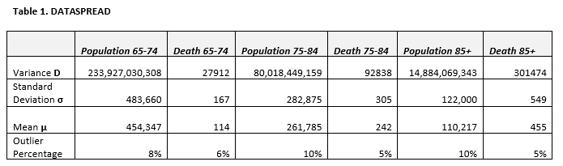
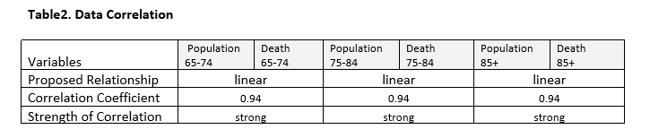

Preparing for Influenza Season - The medical staffing agency analytics
OVERVIEW
The analysis is created for the medical staffing agency that provides temporary staff to hospitals and clinics. The project aimed to proactively plan staffing needs for the upcoming influenza season across the United States. This involved analyzing historical data related to influenza and staffing requirements.
PROCESSING
The analysis encompassed formulating a hypothesis based on conducted research indicating a higher incidence of influenza-related deaths among adults aged 65 and above.
The process also involved conducting a descriptive analysis to evaluate the correlation between influenza deaths and the size of the population age groups. The data limitations were considered, and the spread of the data was evaluated in conjunction with the t-test to compare the number of deaths among different age groups. Furthermore, the need for additional information on vulnerability and vaccination rates was identified.
INSIGHTS
Insight by statistical analysis:
The data on influenza Deaths don’t confirm the assumption about a higher number of Deaths in the age group +80 : shows linear progression in Deaths/Population, and the level of outliners occurrence is mostly near the allowed level of 5%.
Insights by statistical analysis:
The Influenza Deaths have a very strong (94%) correlation to the population age group size. That is, the data confirm that influenza-related Deaths are the age-dependent parameter in groups over 65.
RECOMMRNDATIONS
Evidenced pattern and recommendations:
Influenza infections are associated with thousands of deaths every year in the United States, with the majority of deaths from seasonal influenza occurring among adults aged ≥65 years. Other research gives the mean age at death, as 72.7 years.
My research confirms the first assumption. Therefore, the recommendation is to focus on the +65 age group of the population and to plan the additional staff for regions with a larger group of people 65+ because the corresponding influenza mortality will be higher.
COMPLETE DATA ANALYSIS